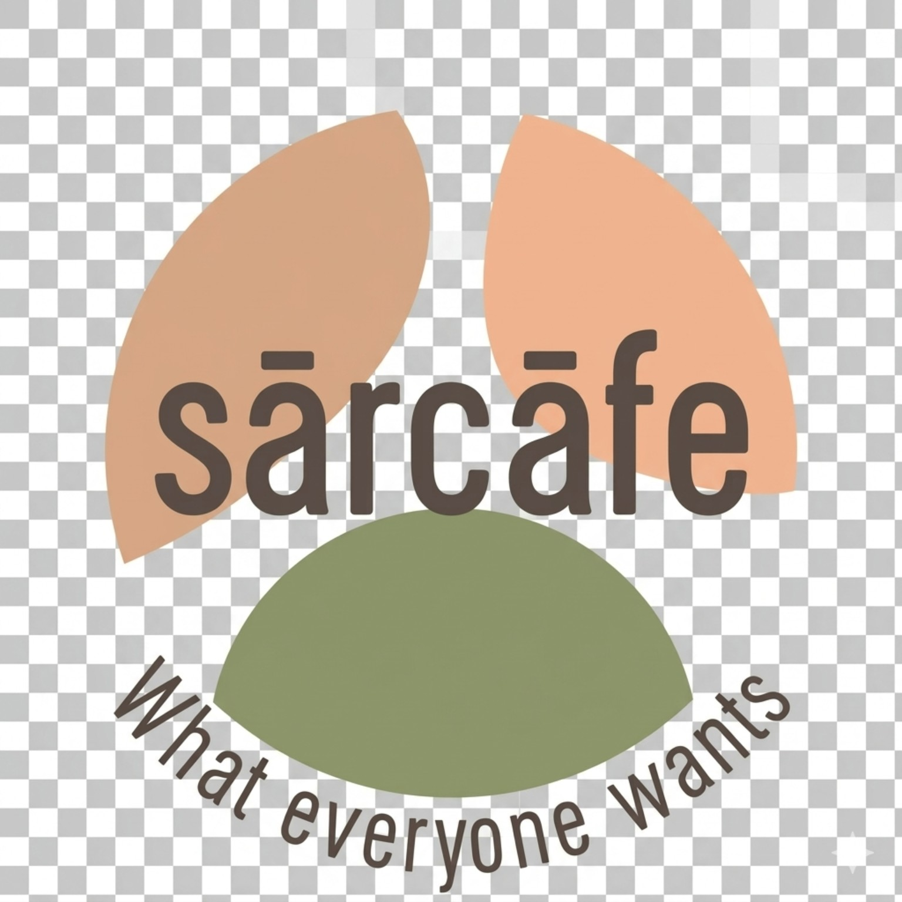

ניהול תפריטים
מנהל התפריט
בחרו סניף כדי לערוך את התפריט שלו.
השינויים נשמרים במכשיר זה. כדי לפרסם אותם לכל הלקוחות יש לייצא את הקובץ ולשמור אותו ב־menu-data.js שבמאגר.

ניהול תפריטים
בחרו סניף כדי לערוך את התפריט שלו.
השינויים נשמרים במכשיר זה. כדי לפרסם אותם לכל הלקוחות יש לייצא את הקובץ ולשמור אותו ב־menu-data.js שבמאגר.